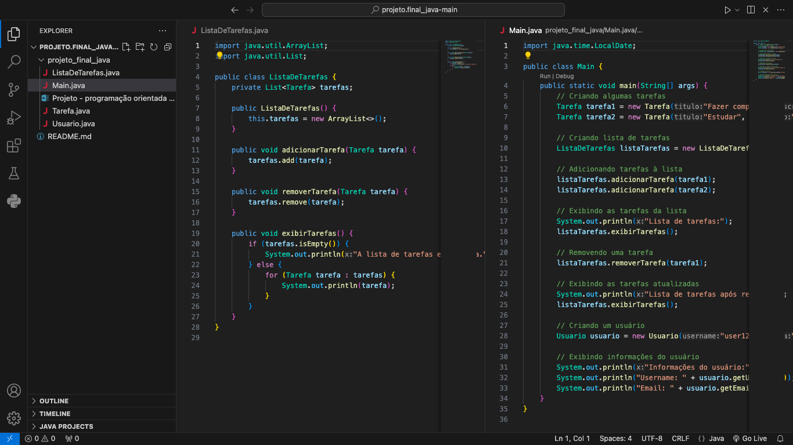

Vinicius Carvalho
Software Engineering | Data Science | Machine Learning
Software Engineering | Data Science | Machine Learning

An drawing application that uses hand movements to create neon drawings.
Features:
- Simplicity: Minimalistic interface to focus on the drawing experience.
- Intuitive: The app responds to hand movements in real-time.
- Creativity: Choose different neon colors to customize your drawings.

Developed a Flappy Bird game where birds are controlled by a neural network trained through genetic algorithms.
Features:
- Birds evolve and improve their scores over successive generations.
- Neural network adapts to optimize bird behavior, avoiding pipes and increasing survival chances.
Excited to share my first Facial Recognition project! Explored Tkinter and OpenCV libraries to create a powerful and intuitive application.
Main Features:
- Addition, verification, and recognition of faces.
- Demonstration in four images illustrating the process.

Sharing my journey of developing a snake game with AI in Python! Dived into an exciting project that challenged and inspired me in various ways.
Development:
- Intensive learning about Artificial Intelligence and Machine Learning.
- Development of a snake game that learns to play on its own.
Note: The project is not yet completed, but I have more to do, so it will be on stand-by.
GitHub Repository

Development of a task management system using Object-Oriented Programming.
Objective: Solve the problem of daily organization, allowing users to create, update, and remove tasks.
| No | Improvement | Justification |
|---|---|---|
| 1 | Add priorities to tasks | Highlight more important tasks. |
| 2 | Implement task categories | Facilitate organization and filtering. |
| 3 | Notifications and reminders | Alert about task deadlines. |
| 4 | Task sharing | Collaboration on projects and team activities. |
Exploration of the concept of inheritance in OOP through practical examples.
Implementation of abstract classes and inheritance to represent animals.
Use of inheritance to calculate the area of different geometric shapes.
Application of the concept of inheritance in a bank accounts system.
Representation of vehicles using inheritance and abstract classes.

Developing a JavaScript project exploring computer vision. Transitioning from Python to JavaScript to broaden my skill set.
Features:
- Facial Detection: Utilizing the Face-api.js library for real-time detection.
- Virtual Glasses Overlay: Overlaying virtual glasses on detected faces.
- Continuous Learning: In constant evolution, planning to add more features.
I am a seventh-semester Software Engineering student with strong skills in languages such as Python, Java, JavaScript, and C++. My passion for programming extends to the world of Machine Learning and Data Science, areas I am eager to explore more deeply.
In my free time, I stay updated with the latest technological trends, actively participate in open-source projects on my GitHub profile, and am always seeking challenges that allow me to apply and enhance my skills, contributing to the software development community.